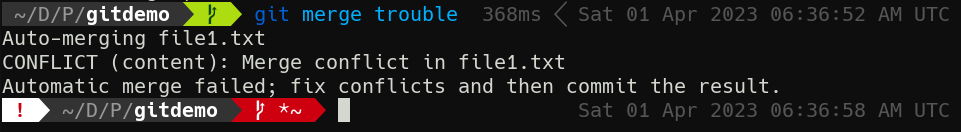
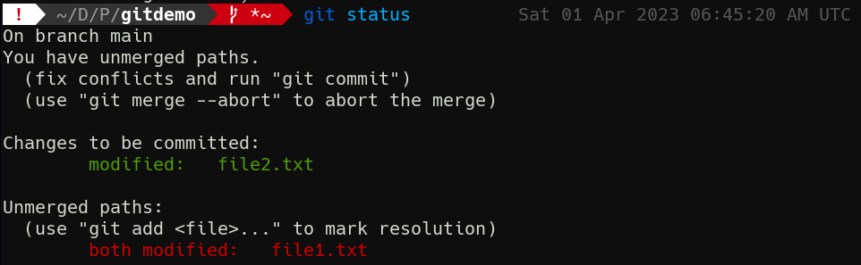
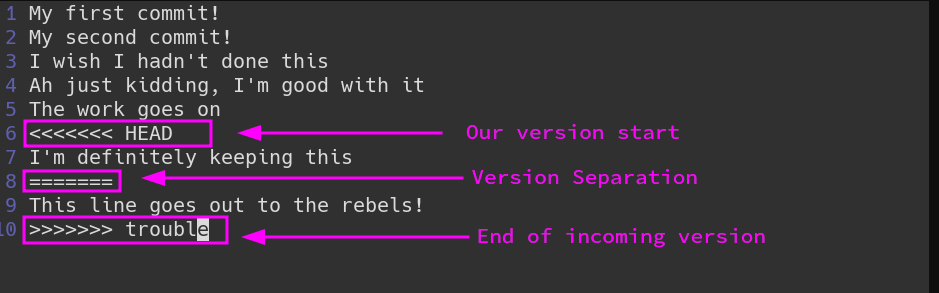

2-4: When Merges Go Wrong
Two objects cannot occupy the same point in space and time, or so say Newtonian physics. While quantum reality may get a little fuzzier on those questions, Git commits do not. During a merge, commits that have different changes in the same file, on the same line results in merge conflicts.
Conflicts are uncommon, but also unavoidable when you have a large number of branches or developers for the same project. Sooner or later, somebody will make a change to a file in direct contradiction to somebody else's change.
Git has a process for resolving these conflicts, but it takes getting used to. Let's get ourselves into some trouble!
git switch -c trouble
echo "This line goes out to the rebels!" >> file1.txt
echo "This line goes out to the dreamers!" >> file2.txt
git commit -am "Who cares about main; I'm doing my own thing"
git switch main
echo "I'm definitely keeping this" >> file1.txt
git commit -am "Add line to file1 that I'm definitely keeping"
git merge trouble
Aaaand conflict.

Uh oh. What have we done?!
First, review git status to understand the current state of the working tree.
Conflict Syntax

There's quite a bit of information here. First, we're told the merge did not complete. If we want to back out entirely, we can! We can run git merge --abort, and we'll go back to our clean main, no harm no foul. But what about that change in file2.txt? What if we actually want that? We can't just ignore this problem; we need to confront it head-on. For the first time in this course, I'm going to ask you to use a text editor. Any editor will do, but use it to open file1.txt.

What da—Git modified our file for us! Yeah, this is one of the more intrusive Git operations. When there's a conflict in a file, Git will add lines indicating where conflicting sections begin an end. This will always start with the <<<<<<< HEAD marker to indicate the current state. Beneath that are all the lines that are currently present in the branch you're on. Then comes ======= to show the branch separation. Then comes all the lines that differ, until the >>>>>>> and branch name.
Resolving Conflicts
To sort this mess out, you need to decide which lines stay and which lines go. This is a manual process. There are tools that can make it a little easier, and we'll discuss them later, but I want you to be comfortable with how Git presents its raw data.
I think we want to keep the current branch's version, so let's delete not only the Git markings, but also the incoming line from trouble. The file should look like this when done:
My first commit!
My second commit!
I wish I hadn't done this
Ah just kidding, I'm good with it
The work goes on
I'm definitely keeping this
Save and quit.
We now have to re-stage file1.txt and commit our changes to finish the merge.
git add file1.txt
git merge --continue
When we do git merge --continue, you'll notice a text editor pops up. You can of course pass -m with a message to bypass this. But hey! Our working tree is clean again!
Run git log --oneline --graph to see the fruits of your labor. Look at those pretty branches.
As always, there is a great deal more depth to the topic of conflict resolution, but this is where to start. You'll now have what you need to fix these issue when they arise.
Check For Understanding
What happens if I make commits to the same file in 2 different branches, but on different lines? Maybe something to test...